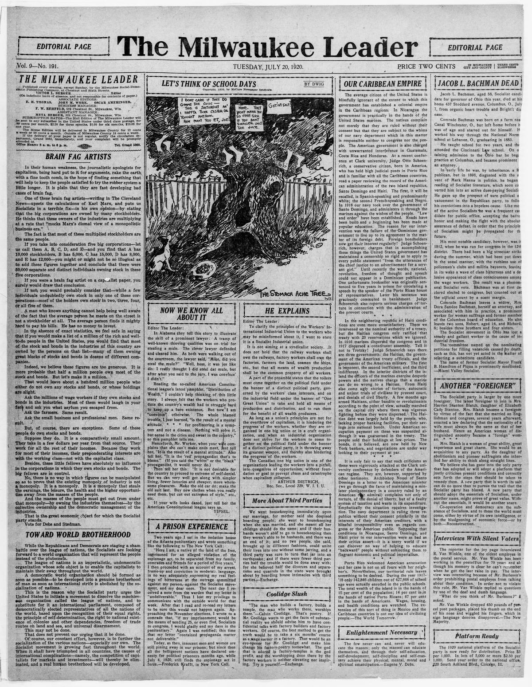

Our Caribbean EmpireNuestro imperio del Caribe
The Milwaukee Leader. Milwaukee, Wis., July 20, 1920. Page 10. Published by Milwaukee Social-Democratic Pub. Co. A daily newspaper, 1911–1938.The Milwaukee Leader. Milwaukee, Wis., 20 de julio de 1920. Página 10. Publicado por Milwaukee Social-Democratic Pub. Co. Periódico diario, 1911–1938. View the originalVer el original

The Milwaukee leader reported sharp criticisms of the U.S. military occupation in Haiti and Santo Domingo, citing findings by Judge Otto Schoenrich and Archbishop Adolfo Nouel. The article reported allegations of despotic military rule, the dissolution of legislative assemblies, arbitrary provost court trials, and the suppression of civil liberties. It also claimed that debt disbursements to native bondholders were suspended under the occupation while New York bankers acquired the depreciated securities.El Milwaukee leader informó sobre duras críticas a la ocupación militar estadounidense en Haití y Santo Domingo, citando las conclusiones del juez Otto Schoenrich y del arzobispo Adolfo Nouel. El artículo dio cuenta de denuncias de un régimen militar despótico, la disolución de asambleas legislativas, juicios arbitrarios ante cortes marciales y la supresión de las libertades civiles. También afirmó que durante la ocupación se suspendieron los pagos de la deuda a los tenedores de bonos nacionales, mientras banqueros de Nueva York adquirían los títulos depreciados.
FULL TEXT:TEXTO COMPLETO:
OUR CARIBBEAN EMPIRENUESTRO IMPERIO CARIBEÑO
The average citizen of the United States is blissfully ignorant of the extent to which this government has established a colonial empire in the Caribbean regions. In Nicaragua the government is practically in the hands of the United States marines. The natives complain not merely that they are ruled without their consent but that they are subject to the whims of our navy department which in this matter is responsible neither to congress nor the people. The American government is also charged with unwarranted interference in Guatemala, Costa Rica and Honduras. At a recent conference at Clark university, Judge Otto Schoenrich, a conservative citizen, born in America, who has held high judicial posts in Porto Rico and is familiar with all the Caribbean countries, read a paper reviewing the record of the American administration of the two island republics, Santo Domingo and Haiti. The first, it will be recalled, is Spanish-speaking and predominantly white; the second French-speaking and Negro. In 1916 our navy took over the government of Santo Domingo, and administers it through the marines against the wishes of the people. “Law and order” have been established. Roads have been built and a beginning has been made at popular education. The reason for our intervention was the failure of the Dominican government to live up to its agreement in the matter of its foreign debt. Foreign bondholders now get their interest regularly! Judge Schoenrich, however, charges that in accomplishing these things the United States government has maintained a censorship so rigid as to apply to every public statement “from the utterances of the chief justice to an advertisement for a servant girl.” Until recently the words, national, revolution, freedom of thought and speech could not appear in a Dominican publication. One unfortunate bookseller was originally sentenced to five years in prison for circulating a speech by the speaker of the Porto Rican house of representatives. Later his sentence was graciously commuted to banishment. Judge Schoenrich also reports serious charges of torture in connection with the administration of the provost courts.El ciudadano promedio de los Estados Unidos es dichosamente ignorante de la extensión a la que este gobierno ha establecido un imperio colonial en las regiones del Caribe. En Nicaragua el gobierno está prácticamente en manos de los infantes de marina de los Estados Unidos. Los nativos se quejan no meramente de que son gobernados sin su consentimiento sino de que están sujetos a los caprichos de nuestro departamento de marina que en este asunto no es responsable ni ante el congreso ni ante el pueblo. El gobierno estadounidense también es acusado de interferencia injustificada en Guatemala, Costa Rica y Honduras. En una conferencia reciente en la universidad Clark, el Juez Otto Schoenrich, un ciudadano conservador, nacido en América, que ha ocupado altos puestos judiciales en Puerto Rico y está familiarizado con todos los países caribeños, leyó un trabajo revisando el récord de la administración estadounidense de las dos repúblicas isleñas, Santo Domingo y Haití. La primera, se recordará, es de habla española y predominantemente blanca; la segunda de habla francesa y Negra. En 1916 nuestra marina tomó el gobierno de Santo Domingo, y lo administra a través de los infantes de marina contra los deseos del pueblo. «La ley y el orden» han sido establecidos. Se han construido caminos y se ha hecho un comienzo en la educación popular. La razón de nuestra intervención fue el fracaso del gobierno dominicano en cumplir su acuerdo en el asunto de su deuda extranjera. ¡Los tenedores de bonos extranjeros ahora reciben su interés regularmente! El Juez Schoenrich, sin embargo, acusa que al lograr estas cosas el gobierno de los Estados Unidos ha mantenido una censura tan rígida que se aplica a toda declaración pública «desde las expresiones del presidente de la corte suprema hasta un anuncio para una muchacha sirvienta». Hasta recientemente las palabras, nacional, revolución, libertad de pensamiento y expresión no podían aparecer en una publicación dominicana. Un desafortunado librero fue originalmente sentenciado a cinco años en prisión por circular un discurso del presidente de la cámara de representantes de Puerto Rico. Más tarde su sentencia fue graciosamente conmutada a destierro. El Juez Schoenrich también reporta serios cargos de tortura en conexión con la administración de las cortes prebostales.
In the neighboring republic of Haiti conditions are even more unsatisfactory. There we intervened on the nominal authority of a treaty, but the Haitian congress only ratified that treaty with 23 reservations which we ignored. In 1916 marines dispersed the congress and in 1917 dispersed a constituent assembly. Tell it not to Trotzky! Judge Schoenrich says there are three governments: the Haitian, the government of the American treaty officials, and the government of the American military. The first is impotent, the second inefficient, and the third indifferent. In the interior districts of the island the officers of the marines exercise despotic powers and the natives charge that a marine can do no wrong to a Haitian. From Haiti also come ugly stories of torture, autocratic and unjust trials of civilians by provost court, and denials of civil liberty. A few months ago armed Haitians, either bandits or revolutionists according to the point of view, actually marched on the capital city where there was vigorous fighting before they were dispersed. The Haitian debt was largely held by the people, who, lacking proper banking facilities, put their savings into national bonds. Under American occupation payment on these was suspended although it was guaranteed in the treaty. The people sold their holdings at low prices. The bonds, it is believed, are now held by New York bankers, and negotiations are under way looking to their payment at par.En la república vecina de Haití las condiciones son aún más insatisfactorias. Allí intervenimos con la autoridad nominal de un tratado, pero el congreso haitiano solo ratificó ese tratado con 23 reservas que ignoramos. En 1916 los infantes de marina dispersaron el congreso y en 1917 dispersaron una asamblea constituyente. ¡No se lo digan a Trotzky! El Juez Schoenrich dice que hay tres gobiernos: el haitiano, el gobierno de los oficiales estadounidenses del tratado, y el gobierno de los militares estadounidenses. El primero es impotente, el segundo ineficiente, y el tercero indiferente. En los distritos del interior de la isla los oficiales de los infantes de marina ejercen poderes despóticos y los nativos acusan que un infante de marina no puede hacer mal a un haitiano. Desde Haití también vienen historias feas de tortura, juicios autocráticos e injustos de civiles por cortes prebostales, y negaciones de la libertad civil. Hace unos meses haitianos armados, ya bandidos o revolucionistas según el punto de vista, realmente marcharon sobre la ciudad capital donde hubo lucha vigorosa antes de que fueran dispersados. La deuda haitiana era en gran parte tenida por el pueblo, que, careciendo de facilidades bancarias apropiadas, puso sus ahorros en bonos nacionales. Bajo la ocupación estadounidense el pago sobre estos fue suspendido aunque estaba garantizado en el tratado. El pueblo vendió sus tenencias a precios bajos. Los bonos, se cree, ahora son tenidos por banqueros de Nueva York, y negociaciones están en curso buscando su pago a la par.
It is only fair to say that such criticisms as these were vigorously attacked at the Clark university conference by defenders of the American regime. They are, however, supported by other testimony. Archbishop Nouel of Santo Domingo in a letter to the American minister (we go through the farce of maintaining a minister plenipotentiary in a country ruled by an American rear admiral) complains not only of torture, of the denial of liberty, but of a faulty system of taxation and waste in its expenditure. Emphatically the situation requires investigation. The navy department is ruling three republics without their consent primarily in the interests of their American creditors, with a blissful irresponsibility even as regards congress or the American public. Supposing that conditions in Nicaragua, Santo Domingo, and Haiti prior to our intervention were as bad as their critics assert—it is a sorry world if we can discover no way of helping to educate “backward” people without subjecting them to flagrant economic and political imperialism.Solo es justo decir que tales críticas como estas fueron vigorosamente atacadas en la conferencia de la universidad Clark por defensores del régimen estadounidense. Son, sin embargo, apoyadas por otro testimonio. El Arzobispo Nouel de Santo Domingo en una carta al ministro estadounidense (pasamos por la farsa de mantener un ministro plenipotenciario en un país gobernado por un contralmirante estadounidense) se queja no solo de tortura, de la negación de la libertad, sino de un sistema defectuoso de tributación y desperdicio en su gasto. Enfáticamente la situación requiere investigación. El departamento de marina está gobernando tres repúblicas sin su consentimiento principalmente en los intereses de sus acreedores estadounidenses, con una dicha irresponsabilidad incluso en cuanto al congreso o al público estadounidense. Suponiendo que las condiciones en Nicaragua, Santo Domingo, y Haití antes de nuestra intervención fueran tan malas como sus críticos afirman—es un mundo lamentable si no podemos descubrir modo alguno de ayudar a educar a pueblos «atrasados» sin someterlos a flagrante imperialismo económico y político.
Porto Rico welcomed American annexation and her case is not on all fours with her neighbor’s. Nevertheless, our territorial rule leaves something to be desired. During the year 1917-’18 only 142,846 children out of 427,668 of school age were actually enrolled in the public schools. The total wealth of the island is in the hands of 15 per cent of the population; 14 per cent is in the hands of native Porto Ricans; 67 per cent in the hands of Americans. Wages, housing, and health conditions are wretched. The extension of this sort of thing in Mexico and the Caribbean countries is not our idea of civilizing people.—The World Tomorrow.Puerto Rico dio la bienvenida a la anexión estadounidense y su caso no es en todo igual al de su vecina. Sin embargo, nuestro gobierno territorial deja algo que desear. Durante el año 1917-'18 solo 142,846 niños de 427,668 en edad escolar estaban realmente inscritos en las escuelas públicas. La riqueza total de la isla está en manos del 15 por ciento de la población; el 14 por ciento está en manos de puertorriqueños nativos; el 67 por ciento en manos de estadounidenses. Los salarios, la vivienda, y las condiciones de salud son miserables. La extensión de esta clase de cosa en México y los países caribeños no es nuestra idea de civilizar a la gente.—The World Tomorrow.
[Editor's note: the paper writes of the east as part of Hayti. From 1822 to 1844 the Dominican Republic was held by Haitian military occupation, against its people's will; it restored its independence on February 27, 1844.][Nota del editor: el periódico habla del este como parte de Haití. De 1822 a 1844 la República Dominicana estuvo bajo ocupación militar haitiana, contra la voluntad de su pueblo; restauró su independencia el 27 de febrero de 1844.]
This collection gathers the coverage of the Dominican Republic in the American press, in the order it was published.Esta colección reúne la cobertura de la República Dominicana en la prensa estadounidense, en el orden en que se publicaron.